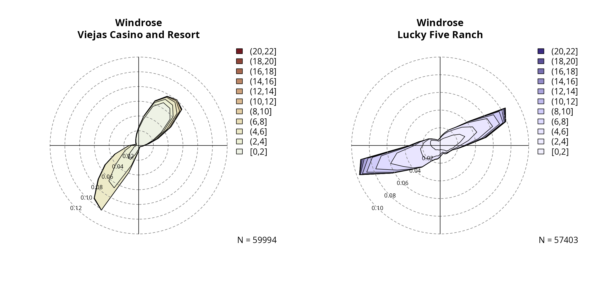
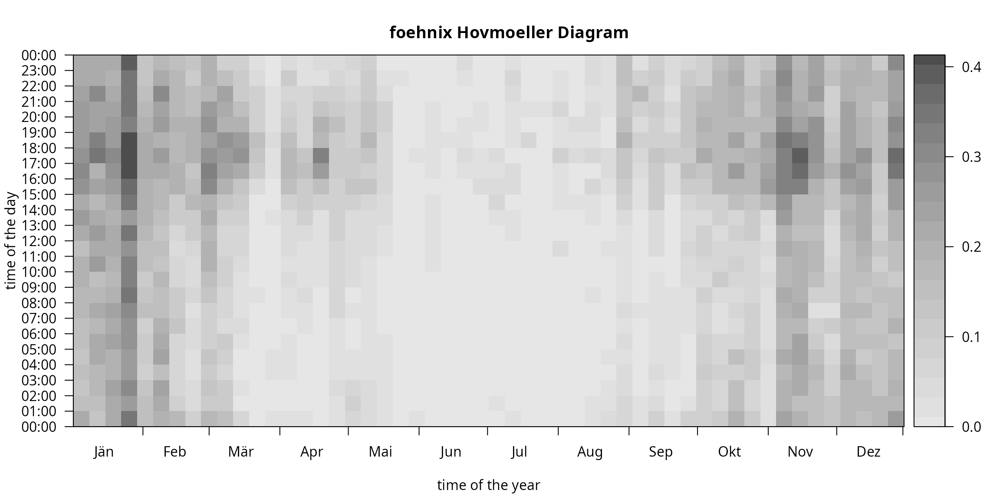

vignettes/viejas.Rmd
viejas.RmdData Set Description
The “Californian” data set consists of hourly meteorological observations from station “Viejas Casino and Ranch” and station “Lucky Five Ranch” located in South California.
Viejas is located at the foot of the westerly slope of the Sierra Nevada mountain range and exhibits strong easterly winds during downslope wind situations. The Lucky Five Ranch is located northeast of and provides information about the upstream air mass for the classification algorithm.
Loading the Data Set
demodata("california") returns a data set which combines hourly meteorological observations of both sites (Viejas; Lucky Five). In addition, the potential temperature difference between the two stations is calculated by reducing the dry air temperature from “Lucky Five Ranch” to the height of “Viejas” (dry adiabatic lapse rate of 1K per 100m; stored on diff_temp). For details see demodata.
## air_temp relative_humidity wind_speed wind_direction
## 2012-01-01 00:00:00 23.89 25 1.34 227
## 2012-01-01 01:00:00 20.00 22 2.68 43
## 2012-01-01 02:00:00 19.44 15 4.02 35
## wind_gust crest_air_temp crest_relative_humidity
## 2012-01-01 00:00:00 2.68 16.67 17
## 2012-01-01 01:00:00 4.02 14.44 21
## 2012-01-01 02:00:00 6.70 13.89 20
## crest_wind_speed crest_wind_direction crest_wind_gust
## 2012-01-01 00:00:00 5.81 91 8.94
## 2012-01-01 01:00:00 0.90 49 2.68
## 2012-01-01 02:00:00 0.90 154 2.68
## diff_temp
## 2012-01-01 00:00:00 0.08
## 2012-01-01 01:00:00 1.74
## 2012-01-01 02:00:00 1.75
# Check if our object is a numeric zoo object:
c("is.zoo" = is.zoo(data), "is.numeric" = is.numeric(data))## is.zoo is.numeric
## TRUE TRUEMissing values in the data set (NA) are allowed and will be properly handled by all functions. One restriction is that the time series object has to be regular (but not strictly regular). “Regular” means that the time steps have to be divisible by the smallest time step, “strictly regular” means that we have no missing observations (if our smallest time interval is 1 hour observations have to be available every hour have to be available to be strictly regular). The foehnix will inflate the data set and make it strictly regular, if needed.
c("is regular" = is.regular(data),
"is strictly regular" = is.regular(data, strict = TRUE))## is regular is strictly regular
## TRUE FALSEAfter preparing the data set (regular or strictly regular zoo object withnumeric` values) we can investigate the observed wind information.
par(mfrow = c(1,2))
# Observed wind speed/wind direction "Viejas"
windrose(data, ddvar = "wind_direction", ffvar = "wind_speed",
main = "Windrose\nViejas Casino and Resort",
breaks = seq(0, 22, by = 2))
# Observed wind speed/wind direction "Lucky Five"
windrose(data, ddvar = "crest_wind_direction", ffvar = "crest_wind_speed",
main = "Windrose\nLucky Five Ranch", hue = 270,
breaks = seq(0, 22, by = 2))
Given the plots above we define the foehn wind direction at Viejas between 305 and 160 degrees (a 215 degree wind sector centered northeast). This wind sector can be chosen rather wide, but should leave out non-foehn wind directions to exclude upslope winds. The wind sector(s) can be added to the windrose as follows:
# Windrose plot with custom variable names (ddvar, ffvar),
# title, breaks, polygon borders, and the wind sector from above
# with a custom color.
windrose(data, ddvar = "wind_direction", ffvar = "wind_speed",
main = "Windrose Viejas with Custom foehn Wind Sector",
breaks = seq(0, 16, by = 2),
windsector = list(c(305, 160)),
windsector.col = "#DFEFF6",
border = "gray50", lwd = .5)
The windsector is solely used for visual justification, the same restriction will be used in the following step when estimating the foehnix classification model.
Estimate Classification Model
The next step (the core feature of this package) is to estimate the two-component mixture model for foehn classification. The following model assumptions are used here:
-
Main variable:
diff_temp(potential temperature difference) is used as the main covariate to separate ‘foehn’ from ‘no foehn’ events. -
Concomitant variable:
wind_speed(wind speed at target station Viejas). -
Wind filter: the
wind_directionat station Viejas has to lie within 305 and 160 degrees (northeasterly wind direction; see above). -
Option switch:
switch = TRUEas highdiff_tempindicate stable stratification (no foehn).
# Estimate the foehnix classification model
mod <- foehnix(diff_temp ~ wind_speed,
data = data,
switch = TRUE,
filter = list(wind_direction = c(305, 160)))Model Summary
##
## Call: foehnix(formula = diff_temp ~ wind_speed, data = data, switch = TRUE,
## filter = list(wind_direction = c(305, 160)))
##
## Number of observations (total) 61368 (184 due to inflation)
## Removed due to missing values 3569 (5.8 percent)
## Outside defined wind sector 26541 (43.2 percent)
## Used for classification 31258 (50.9 percent)
##
## Climatological foehn occurance 9.54 percent (on n = 57799)
## Mean foehn probability 9.63 percent (on n = 57799)
##
## Log-likelihood: -86157.2, 6 effective degrees of freedom
## Corresponding AIC = 172326.5, BIC = 172376.6
## Time required for model estimation: 3.2 seconds
##
## Cluster separation (ratios close to 1 indicate
## well separated clusters):
## prior size post>0 ratio
## Component 1 (foehn) 0.18 5513 10677 0.52
## Component 2 (no foehn) 0.82 25745 28329 0.91
##
## ---------------------------------
##
## Concomitant model: z test of coefficients
## Estimate Std. error z value Pr(>|z|)
## cc.(Intercept) -2.309298 0.107449 -21.492 < 2.2e-16 ***
## cc.wind_speed 5.934258 0.054909 108.075 < 2.2e-16 ***
## ---
## Signif. codes: 0 '***' 0.001 '**' 0.01 '*' 0.05 '.' 0.1 ' ' 1
## Number of IWLS iterations: 1 (algorithm converged)
## Dispersion parameter for binomial family taken to be 1.The full data set contains \(N = 61368\) rows, \(61184\) from the data set itself (data) and \(184\) due to inflation used to make the time series object strictly regular.
Thereof, \(3569\) are not considered due to missing data, \(26541\) as they do not fulfil the filter constraint (wind_direction outside defined wind sector), wherefore the final model is based on \(31258\) observations (or rows).
One good indication whether the model well separates the two clusters is the “Cluster separation” output (summary) or the posterior probability plot:
# Cluster separation (summary)
summary(mod)$separation## prior size post>0 ratio
## Component 1 (foehn) 0.1781598 5513 10677 0.5163435
## Component 2 (no foehn) 0.8218402 25745 28329 0.9087860The separation matrix shows the prior probabilities, the size (number of observations assigned to each component; posterior probability), number of probabilities exceeding a threshold (default eps = 1e-4), and the ratio between the latter two. Ratios close to \(1.0\) indicate that the two clusters are well separated (\(ratio > 0.5\) are already good for this application).
Another indication is the which = "posterior" plot which shows the empirical histogram of estimated probabilities (for within-windsector observations). Point masses around \(0.0\) and \(1.0\) indicate that we have two well separated clusters (the probability to fall in one of the clusters is always close to either \(0\) or \(1\)).

Model coefficients
The following parameters are estimated for the two Gaussian clusters:
- No-foehn cluster: \(\mu_1 = 9.13\), \(\sigma_1 = 4.08\) (parameter scale)
- Foehn cluster: \(\mu_2 = 0.22\), \(\sigma_2 = 1.42\) (parameter scale)
- Concomitant model: positive
wind_speedeffect, +2823.4 percent per \(m~s^{-1}\)
coef(mod)## Coefficients of foehnix model
## Model formula: diff_temp ~ wind_speed
## foehnix family of class: Gaussian
##
## Coefficients
## mu1 sigma1 mu2 sigma2 (Intercept) wind_speed
## 9.1263349 4.0800074 0.2234891 1.4175373 -7.8449992 3.3753179

Graphical Model Assessment
A foehnix object comes with generic plots for graphical model assessment.
The following figure shows the ‘log-likelihood contribution’ of
- the main component (left hand side of formula),
- the concomitant model (right hand side of formula),
- and the full log-likelihood sum which is maximised by the optimization algorithm.
The abscissa shows (by default) the logarithm of the iterations during optimization.
# Log-likelihood contribution
plot(mod, which = "loglikcontribution")
In addition, the coefficient paths during optimization can be visualized:
# Coefficient path
plot(mod, which = 3L)
The left plot shows the parameters of the two components (\(\mu_1\), \(\log(\sigma_1)\), \(\mu_2\), \(\log(\sigma_2)\)), the right one the standardized coefficients of the concomitant model.
Last but not least a histogram with the two clusters is plotted. which = "hist"creates an empirical density histogram separating “no foehn” and “foehn” events adding the estimated distribution for these two clusters.
devtools::load_all("..")## ℹ Loading foehnix
plot(mod, which = "hist")
Time Series Plot
The Californian demo data set has non-standard variable names (by purpose). Thus, when calling tsplot (time series plot) we do have to manually specify these names.
# Some smaller quality issues in the data (should not be a big deal)
start <- as.POSIXct("2012-03-01")
end <- as.POSIXct("2012-03-12")
# As we dont have the standard names: re-specify variable names.
# In addition, use 'style = "advanced"' to show more details.
tsplot(mod, style = "advanced",
diff_t = "diff_temp", rh = "relative_humidity",
t = "air_temp", crest_t = "crest_air_temp",
dd = "wind_direction", crest_dd = "crest_wind_direction",
ff = "wind_speed", crest_ff = "crest_wind_speed",
ffx = "wind_gust", crest_ffx = "crest_wind_gust",
windsector = list(wind_direction = c(305, 160)),
start = start, end = end)## [1] 305 160
Wind Rose Plot
devtools::load_all("..")## ℹ Loading foehnix
windrose(mod, dd = "wind_direction", ff = "wind_speed",
type = "hist", which = c("foehn", "nofoehn"),
windsector = list(c(305, 160)),
breaks = seq(0, 16, by = 2))
Hovmöler Diagram
# Default image plot
image(mod)
Customized plot which shows the “foehn frequency” for the interesting time period from August to April with custom colors and additional contour lines and custom aggregation period (two-weeks, 3-hourly).
# Customizing image plot
image(mod, deltad = 14L, deltat = 3*3600, contours = TRUE,
contour.col = "white", lwd = 2, labcex = 1.5,
col = colorspace::sequential_hcl(51, "Purple-Yellow", rev = TRUE),
xlim = c(212, 119), zlim = c(0, 0.4))